Deployment
So far, we have seen how to write a simple app in Lua and get in running on your PC or Mac within the desktop player. The next step is to get the app running on a real mobile device. There are two ways to do this in Gideros. The first is to install a "Gideros Player" for the device (iPhone/iPad, Android device or Windows Phone). This is a special app which you side load onto the device. You can then control this app from Gideros Studio running on your PC or Mac (the device and your PC/Mac must be on the same LAN). When you press "Start" in Gideros Studio, your Gideros project runs directly on the device. You can then make changes to your code and see them take effect instantly on a real device. This instant on-device testing over WiFi is unique to Gideros and allows rapid code development and testing. Generally installing the Gideros Player is easy as we provide you with the binary and you just "side load" onto your device, see Gideros Device Player.
The other way to run your app on a real device is to export it as a stand-alone app. This app can then be transfered to other people who do not need Gideros installed to run it. Ultimately the app can be uploaded to the app stores (iTunes, Google Play, windows (Phone) Store etc) to make money. The process of exporting the app in this way is more complicated as the app needs to be packaged, deployed and code-signed via various SDKs which are specific to each operating system. This document describes which third party SDKs you need to install in order to package, sign and deploy your app and upload it to the various app stores, see Deploy to devices and Installing OS-specific SDKs. In brief, you will need the following software to create stand-alone apps:
- For IOS devices, you must be an approved Apple Developer for iOS and install the latest version of Xcode, currently Xcode 7. To run Xcode requires an Intel-based Mac running at least OS X 10.10 Yosemite.
- For Android devices you'll need Android SDK + Eclipse, or Android Studio. Gideros can also export Android packages directly though you will still need to install the Android SDK and related components (see Installing OS-specific SDKs). You can prepare Android apps using any PC or Mac.
- For UWP (including Windows Phone and Windows Store) devices you'll need at least Visual Studio 2013 for Windows (which includes the Windows/phone 8.1 SDK). We recommend you install the latest Visual Studio 2015. Gideros UWP export will also run correctly on Windows 10 and Windows Phone 10 devices.You will need a PC running Windows 8.1 or Windows 10 to compile UWP apps.
There are no special requirements for exporting a desktop app (Windows Desktop or Mac OS X desktop). Gideros simply writes a directory containing the executable, libraries and your assets. You can simply double click on the executable to launch the app. To send it to others, it is sufficient to just zip this directory up and email it. You can also create a dedicated installer using programs like NSIS so that the app will automatically install on your end user's computer and be accessible from the Start Menu.
When you run Gideros Player on a mobile device, it allows you to see and test your application on a device instantly. After you deploy and open Gideros Player on your device, you see the IP of your device. Enter this IP from “Player→Player Settings” menu:

When you press start button, your codes and asset files are transferred to your mobile device via WiFi and your application starts.
Deploy Gideros Player to Devices
For IOS
There is a universal project GiderosiOSPlayer.zip, which
comes with the Gideros installation. You need to extract this zip file and
open, build, deploy this project from Xcode. The process of installing the iOS Gideros Player is the same as installing a stand-alone iOS app as exported
by Gideros, see Deploy to devices for detailed instructions on how to do this
For Android
There is a ready to use application for Android development GiderosAndroidPlayer.apk which comes with the installation.
You can install it by hosting it on a website (eg dropbox) and navigating to the APK using the browser on your Android device.
Alternatively connect the Android device to
your computer using a USB cable and drag the APK onto the device. Now download "APK Installer" (free) from Google Play. Run this app and navigate to
the Gideros Studio APK (wherever you copied it to) to install it. Note: you will need to set your Android device to "install
apps from unknown sources" within the Android Settings menu.
For Windows Phone
To install the Windows Phone player on a Windows Phone you must first unlock you Windows Phone. Run the program "Windows Phone Developer Registration (8.1)". It comes with Visual Studio (Windows Phone SDK 8.1 folder) and looks like this
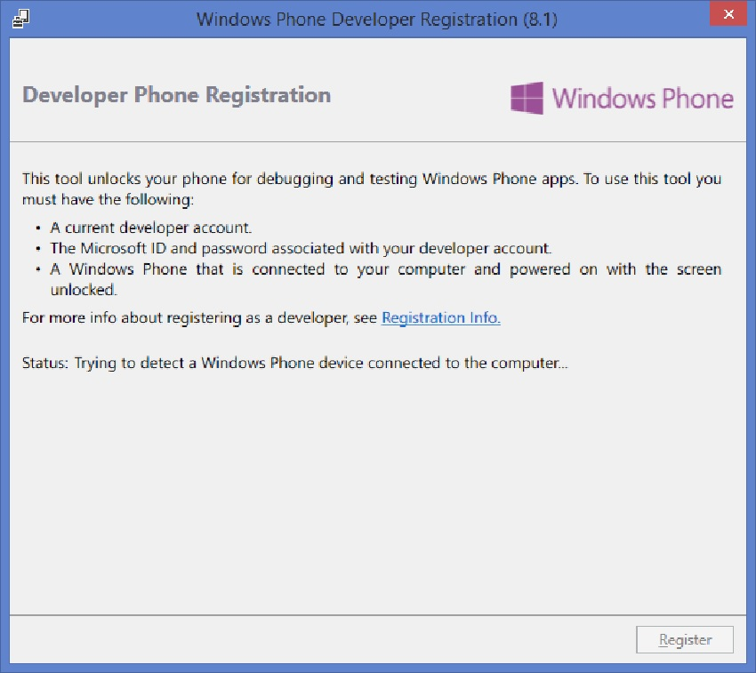
Connect your Windows Phone using a USB cable. After a moment the program should recognise the Windows Phone attached. Now click "Register" and it should announce your phone is unlocked. You will need to type in the username and password you provided when registering Visual Studio.
Once the phone is unlocked you can sideload any app onto it including the Gideros Player. To do this, unpack the file: GiderosWindowsPhonePlayer.zip. Now open "Windows Phone Application Deployment" as shown
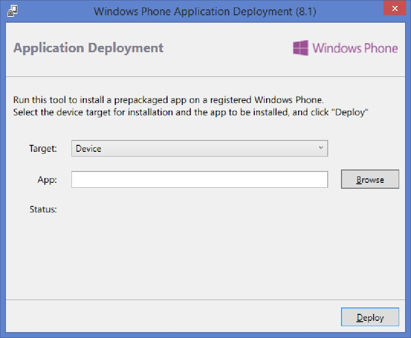
Select Browse and chose the file: giderosgame.WindowsPhone_yy.mm.dd.0_arm.appxbundle
Click "Deploy". After a moment the program will indicate the Windows Phone player app was successfully deployed. Open it on your Windows Phone. You can now run Gideros apps directly on this player from within Gideros Studio.
Windows Store (Metro style) Gideros Player on Windows 8.1/10
Due to Microsoft limitations, you can't run Windows Store app player on the same device as your Gideros Studio are. Gideros Studio just won't connect, due to sandboxing nature of Windows Store apps. You need to run Windows app player on a Windows 8.1 or Windows 10 device and then control it using Gideros Studio running on another computer. The other computer can be any PC or Mac.
For Windows 8.1:
To sideload the Windows player app on Windows 8.1, unzip the file giderosgame.Windows_yy.mm.dd.0_Test.zip (you'll find this in the root directory of the Gideros installation). Then, go to the Start Screen and locate the "powershell" icon (Windows System group). Right click on the powershell icon and select "Run as Administrator". Now, in the powershell type
Show-WindowsDeveloperLicenseRegistration
Add-AppxPackage .\giderosgame.Windows_yy.mm.dd.0_x86.appxbundle
The Gideros Windows player should now be installed and is available from the Start Screen. You can now run Gideros apps directly on this player from within Gideros Studio (running on a different computer)
For Windows 10:
- Go to 'Settings', select 'Update & Security'. Click 'For Developers'. Select 'Developer Mode'.
- Unzip giderosgame.Windows_yy.mm.dd.0_Test.zip to a suitable directory
- Navigate to this directory. Right click the 'AddDevPackage', select 'Run with PowerShell'. Follow the prompts.
Deploy Your Application to Devices
This section describes how to create a stand alone package, deploy and test it on a physical device, and upload to an appropriate app store such as Google Play, the iOS App Store or the Windows (Phone) Store. For desktop exports (Windows and Mac) Gideros does not prepare a package as such but rather a directory containing executables and resources. To distribute to another person you can simply zip the directory up and send to them. A more sophisticated approach is to prepare an installer which you can do using free, third party applications such as NSIS.
For the mobile platforms, you will need to set up appropriate vendor-supplied SDKs to complete the compilation process and create a final signed package. For iOS and Windows UWP (for Windows Phone/Store apps) this essentially involves installing the latest Xcode and Visual Studio respectively. Setting up an Android environment is more complicated and consists of several stages (reflecting the open source nature of Android). The process of installing these OS-specific SDKs on your computer is described fully in Installing OS-specific SDKs. In this section we will assume these SDKs are set up already.
The first step is to export your project from Gideros using “File→Export Project” menu:
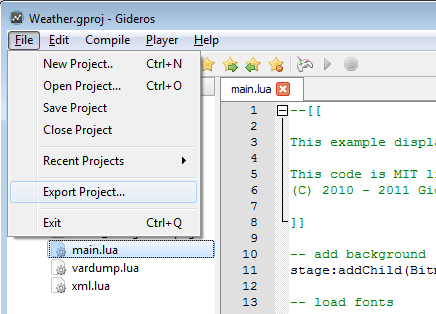
Create an iOS package (IPA)
- Export your application as Xcode project
- Build and deploy Xcode project to actual device
For the second step, you need Intel-based Mac running at least OS X 10.10 Yosemite and an Apple Developer License.
Create an Android package (APK)
Gideros supports 3 ways of exporting your Android project:- Export as an Eclipse project. Import into Eclipse and export a signed APK (deprecated)
- Export as an Android Studio Project. Import into Android Studio and export a signed APK
- Create a signed APK directly from Gideros Studio (needs Android SDKs to be installed, does not support plugins)
For each of these methods, you will need to install addition software as described in Installing OS-specific SDKs. We now describe each method in turn. You only need to choose one!
Create a signed APK using Eclipse
Select the Android tab in the export dialog as shown: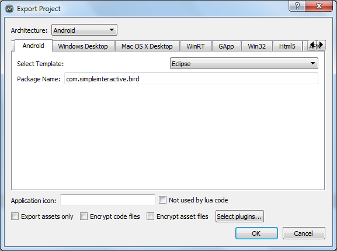
From the pull-down list select "Eclipse". Enter your package name in the form com.yourcompany.yourapp. Now click OK and select a directory for the Eclipse project to be exported to
Open Eclipse and chose File -> Import. Then select Android -> Existing Android Code into Workspace as shown
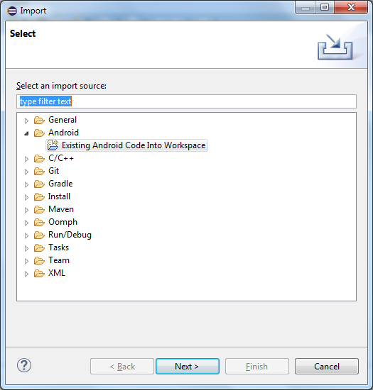
Select the Android project which was exported by Gideros as shown and click Finish (you should select the folder which contains ".project"
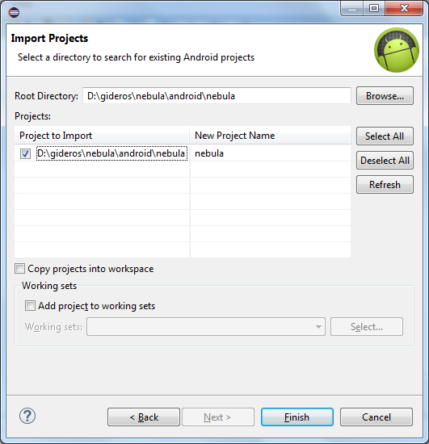
Right click on the project root in Eclipse. Choose "Android Tools" then "Export Signed Android Package..." In the next screen shown, select your keystore to sign the app. All apps submitted to Google Play must be signed in this way. If you have not created a keystore you can do so from this screen. Keep your keystore very safe and do not forget the passwords associated with it! Now enter the keystore password and click Next. In the next screen enter the alias and password of the key you want to use (for most cases it's simplest to maintain a single key). You can now create a signed APK at your chosen location.
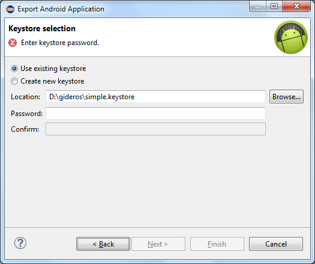
To install the APK on your device, there are several options. You can host the APK on a website eg dropbox and just double click it from the device. If you don't want to use the internet, you can connect your computer to the device using USB cable and drag the APK onto the device. Then go to Google Play and install a free app called "Apk Installer". Launch the app and navigate to your APK to install it. (On the device go to Settings and check the "Unknown Sources" box to allow installation of apps from unknown sources.)
Create a signed APK using Android Studio
In Gideros Studio, select, File > Export and choose the Android tab as shown. From the pulldown menu, choose, "Android Studio". Enter your app ID in the form com.companyname.appname.
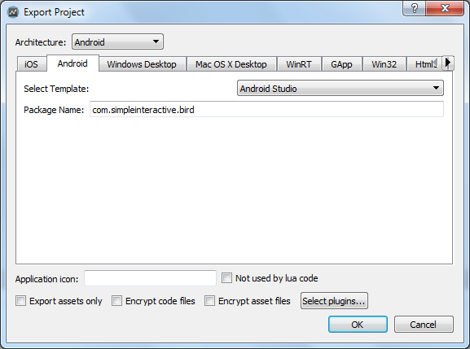
Launch Android Studio and choose "Open an existing Android Studio project". Navigate to the directory Gideros exported (that contains build.gradle) and open the project in Android Studio
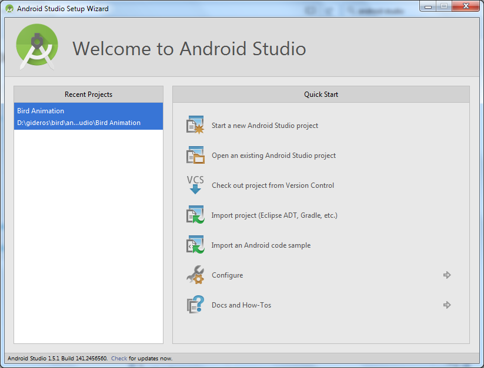
You may need to alter the Android SDK version to correspond to the SDK installed on your computer. To do this, open the "app" folder in the project and double click the "build.gradle" file within this folder. Adjust the entries compileSdkVersion and buildToolsVersion to correspond to what is installed on your system. To see what you have installed, launch "Android SDK Manager" from the Start Menu. Having made the changes choose Tools > Android > Sync Project with Gradle Files.
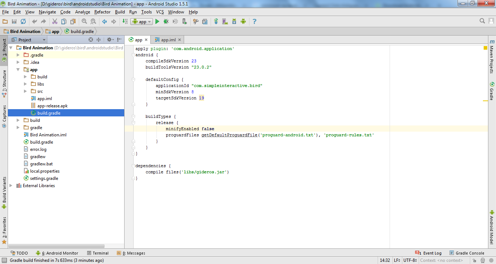{kind=link}
Now select Build > Generated signed SDK... as shown
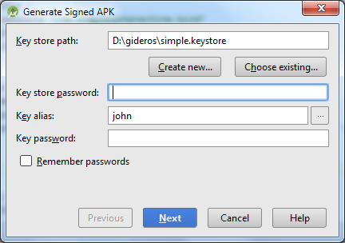
If you have a keystore already, click "Choose existing" and select your keystore and enter the password. Select the key you want to use and enter its alias and password. If you don't have a keystore click "Create new" and follow prompts to create a new keystore. Now click "Next" to export the APK to your chosen location.
To install the APK on your device, there are several options. You can host the APK on a website eg dropbox and just double click it from the device. If you don't want to use the internet, you can connect your computer to the device using USB cable and drag the APK onto the device. Then go to Google Play and install a free app called "Apk Installer". Launch the app and navigate to your APK to install it. (On the device go to Settings and check the "Unknown Sources" box to allow installation of apps from unknown sources.)
Create a signed APK directly using Gideros Studio
Choose File -> Export and choose the APK tab as shown
Enter the package name in the form com.companyname.appname. Enter the location of the Android SDK and Java JDK. You should have installed all these following the instructions in Installing OS-specific SDKs.
All apps uploaded to Google Play must be signed with a keystore. To prepare the keystore use keytool which comes with your Java Development Kit. (on my computer it is located at C:\Program Files\Java\jdk1.8.0_74\bin) Now enter the location of your keystore in the dialog box and select which alias you want to use.
Enter the Android SDK version and Android Tools version you have installed on your computer. If you are not sure, run Android SDK Manager from the Start Menu. You can leave the Android Target SDK at 19, the default.
Having entered all these details, click OK to create both a signed and unsigned APK at a selected location. You will be prompted to enter the password for the keystore and the keystore alias.
Note, the first time you export in this way, Gideros will download and install Gradle which may take 5-10 minutes. Just be patient, subsequent exports will be much faster.
To install the APK on your Android device, there are several options. You can host the APK on a website eg dropbox and just double click it from the device. If you don't want to use the internet, you can connect your computer to the device using USB cable and drag the APK onto the device. Then go to Google Play and install a free app called "Apk Installer". Launch the app and navigate to your APK to install it. (On the device go to Settings and check the "Unknown Sources" box to allow installation of apps from outside of Google Play)
Create a Windows Phone/Store package (APPX)
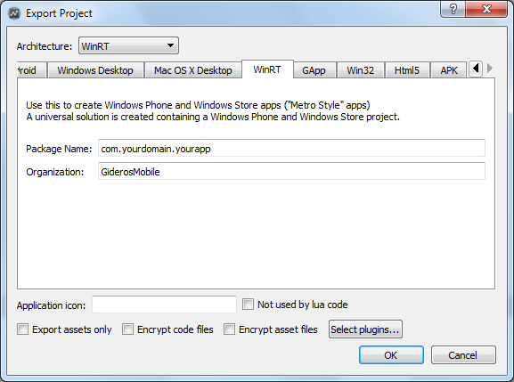
- Export your application as WinRT project (enter the app id as com.companyname.appname and organisation)
- Run Visual Studio and select FILE > Open Project. Select giderosgame.sln in the export directory you chose
- To run your project as Windows Store app:
- Select Release and Win32 settings
- Near Start button in dropdown select giderosgame.Windows
- The Start button should now say "Local Machine"
- Press Start and the game will compile and run as a Windows Store app
- To run your project as Windows Phone app:
- Connect your device through USB (you need to unlock device first, see Gideros Device Player)
- Select Release and ARM settings
- Near Start button in dropdown select giderosgame.WindowsPhone
- The Start button should now say "Device"
- Press Start and the game will compile and run as a Windows Phone app
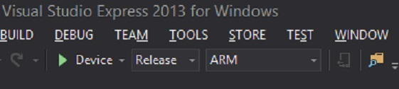
To submit your app to the Windows Store or Windows Phone Store, select one of the projects in the Solution explorer and select STORE > Create App Packages. You can either upload the app immediately to Microsoft or create a stand alone APPX file to distribute to colleagues. There is no need to enter an ID of your colleague's device: as long as his/her phone is unlocked s/he can install and test your APPX package immediately. Note that the process of submitting apps to the Windows or Windows Phone app store is the same, using the STORE menu in Visual Studio.
Similar to how you can deploy players on devices, you can also build a custom player, with built in plugins for specific platforms.
For example, if you have an Ad framework plugin for Android, you simply build Gideros Android player with this plugin and deploy it to device, to test it as you would with normal Android device player.
To deploy custom player with plugins to Android
- Export your Gideros project as Android project
- Add plugin as described in your specific plugin installation instruction
- In your exported project, inside assets folder there is another assets folder, simply delete it, leaving upper assets folder empty
- Build this project to run on your device
- You now have Gideros Android player which behaves exactly the same as normal player, but has the functionalities of applied plugin
To deploy custom player with plugins to IOS
- Export your Gideros project as IOS project
- Add plugin as described in your specific plugin installation instruction
- In your exported project, open AppDelegate.m file
- Change
gdr_initialize(..., false)togdr_initialize(..., true) - You now have Gideros IOS player which behaves exactly the same as normal player, but has the functionalities of applied plugin
To deploy custom player with plugins to Windows/WindowsPhone
- Export your Gideros project as WinRT project
- Add plugin as described in your specific plugin installation instruction
- In your exported project's open winrt.cpp file
- Change
bool isPlayer = false;tobool isPlayer = true; - You now have Gideros WinRT player (for Windows and Windows Phone) which behaves exactly the same as normal player, but has the functionalities of applied plugin
Installing OS-specific SDKs
iOS
Install the latest version of Xcode, currently Xcode 7. You will need a Mac running OSX 10.10 Yosemite or later.Android
Gideros currently supports three methods of creating a signed Android package suitable for upload to Android Stores like Google Play:- Export from Gideros Studio as an Eclipse project. Import into Eclipse and export a signed APK.(Deprecated: Google now recommends Android Studio)
- Export from Gideros Studio as an Android Studio project. Import into Android Studio and export a signed APK.
- Export a signed APK directly from Gideros Studio. You will still need to install Android components on your computer and tell Gideros where these are located. This is described below
Eclipse Setup
Step 1: Install the Java Development KitDownload the latest JDK from Oracle as shown. You will need Java SE (Standard Edition). In the screenshot we are downloading Java SE 8u73 which means Java 1.8 update 73, but simply choose the latest version available. Then double click on the installer package to install the Java JDK

Step 2: Intall Android SDK
Download the latest Android SDK as shown. You will need the "SDK Tool Only" install within "Other Download Options". Chose the appropriate download for your operating system and double click on the install package to install the Android SDK. Note that when you install the SDK it will automatically detect the Java Development Kit as shown in the next image. 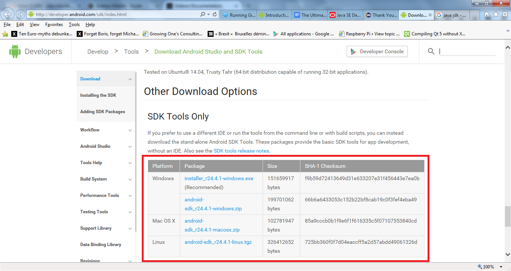 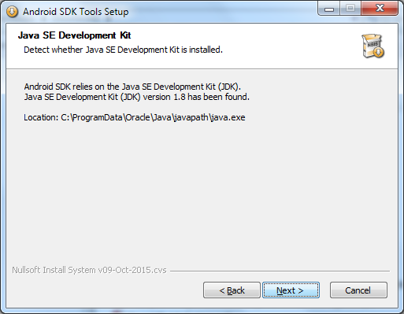
{kind=link}
Two programs will now be installed on your computer under the Start Menu group "Android Developer Tools". The SDK manager allows installation of further Android components and we will use it next. The AVD manager allows installation of various "Android Virtual Devices" essentially Android emulators which you can use to test your apps. We do not recommend the use of these are they are typically very slow. It is better to test on (several) real Android devices
Now launch the "SDK manager" and you will see a window like the one below: 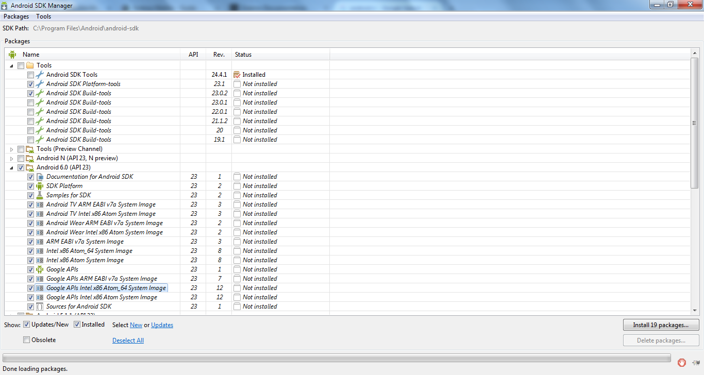{kind=link}
You should select only the latest version of Android (in my case Android 6.0 (API 23)) but do not choose a "preview" version like Android N. You can safely unselect "Documentation for Android SDK" and "Sources for Android SDK". You also need to select the latest version of "Android SDK platform tools" and "Android SDK build tools" as shown. Finally, within the "Extras" section select "Android Support Library" and "Google USB Driver" (not in the screenshot)
Now click "Install x items" and follow the prompts to complete the Android SDK installation
Step 3: Install Eclipse IDE
Download the Eclipse installer". Run it and select "Eclipse IDE for Java Developers". Follow prompts to complete the installation 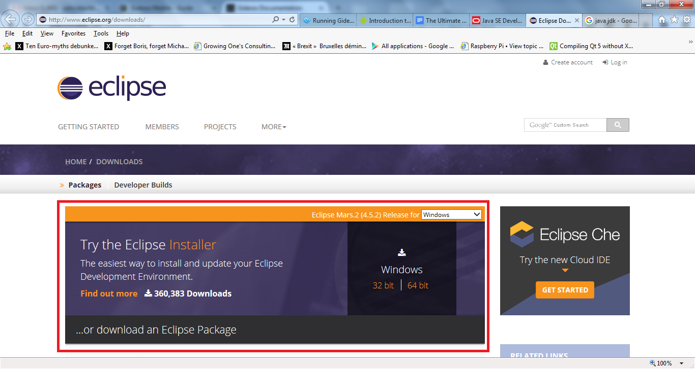{kind=link}
Step 4: Install Android Plugin for Eclipse
- Start Eclipse, then select Help..Install New Software.
- Click Add, in the top-right corner.
- In the Add Repository dialog that appears, enter "ADT Plugin" for the Name and the following URL for the Location: https://dl-ssl.google.com/android/eclipse/
- Click OK.
- In the Available Software dialog, select the checkbox next to Developer Tools and click Next.
- In the next window, you'll see a list of the tools to be downloaded. Click Next.
- Read and accept the license agreements, then click Finish. If you get a security warning saying that the authenticity or validity of the software can't be established, click OK
- When the installation completes, restart Eclipse.
Android Studio Setup
Step 1: Install the Java Development KitDownload the latest JDK from Oracle as shown. You will need Java SE (Standard Edition). In the screenshot we are downloading Java SE 8u73 which means Java 1.8 update 73, but simply choose the latest version available. Then double click on the installer package to install the Java JDK
Step 2: Install Android Studio
Download Android Studio as shown in the screenshot.
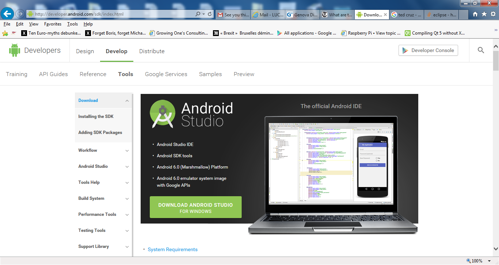Double click on the Android Studio installer to begin the installation as shown in the figure. If you have no Android components installed check the "Android SDK" box. If you already have a version of Android SDK installed, unselect "Android SDK". We don't recommend installing "Android Virtual Device" as these Android emulators are slow and do not always represent a real device behaviour. But there is no harm installing them. (the "performance" box relates to the Android Virtual Devices also)
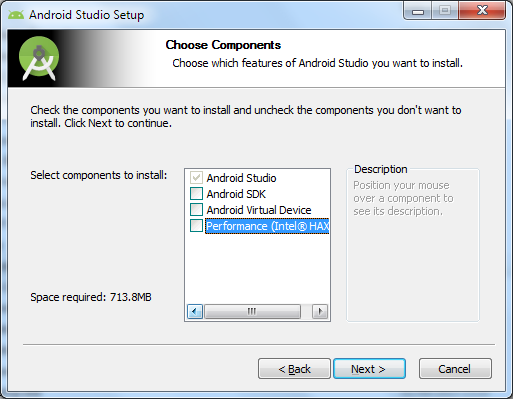If you did not ask to install Android SDK, the next screen will ask you to select the location of an existing SDK on your compute. Choose "Use an existing SDK" and select the location as shown. Android Studio will now install
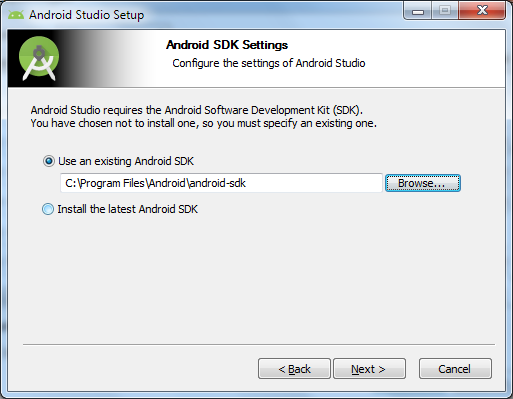Direct APK Export Setup
Step 1: Install the Java Development KitDownload the latest JDK from Oracle as shown. You will need Java SE (Standard Edition). In the screenshot we are downloading Java SE 8u73 which means Java 1.8 update 73, but simply choose the latest version available. Then double click on the installer package to install the Java JDK
Step 2: Install Android SDK
Download the latest Android SDK as shown. You will need the "SDK Tool Only" install within "Other Download Options". Chose the appropriate download for your operating system and double click on the install package to install the Android SDK. Note that when you install the SDK it will automatically detect the Java Development Kit as shown in the next image.
Two programs will now be installed on your computer under the Start Menu group "Android Developer Tools". The SDK manager allows installation of further Android components and we will use it next. The AVD manager allows installation of various "Android Virtual Devices" essentially Android emulators which you can use to test your apps. We do not recommend the use of these are they are typically very slow. It is better to test on (several) real Android devices
Now launch the "SDK manager" and you will see a window like the one below:You should select only the latest version of Android (in my case Android 6.0 (API 23)) but do not choose a "preview" version like Android N. You can safely unselect "Documentation for Android SDK" and "Sources for Android SDK". You also need to select the latest version of "Android SDK platform tools" and "Android SDK build tools" as shown. Finally, within the "Extras" section select "Android Support Library" and "Google USB Driver" (not in the screenshot)
Now click "Install x items" and follow the prompts to complete the Android SDK installation
Step 3: Install Apache Ant
Download the binary version of Apache Ant. Unzip the file to a suitable location. Remember this location as you will need it when exporting an Android app from Gideros. 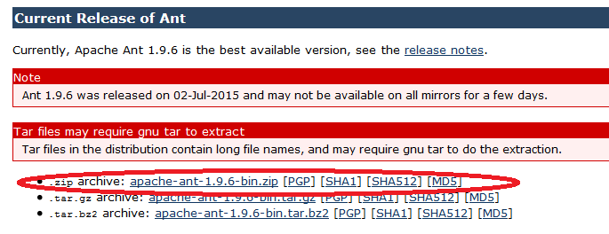UWP for Windows Store/Phone apps
Install the latest version of Visual Studio (current VS 2015) and ensure you have added components for Windows Store/Phone development.Add an extension to Visual Studio
Gideros supports SQLite and to make this work on Windows Phone, it is necessary to add an extension to Visual Studio. Even if you don't use SQLite, you will need to add this extension or Windows Phone projects exported by Gideros will not compile. It's easy to do as explained next. Of course, you only need to add this extension once.
Open Visual Studio and go to TOOLS > Extensions and Updates. Select the "Online" tab on the left and type SQLite in the search bar at the top right. Select SQLite for Windows Phone 8.1/10 (as shown in the next screenshot) and select install. You will need to restart VS for the extension to take effect.
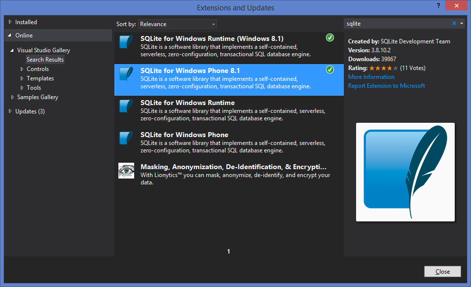{kind=link}